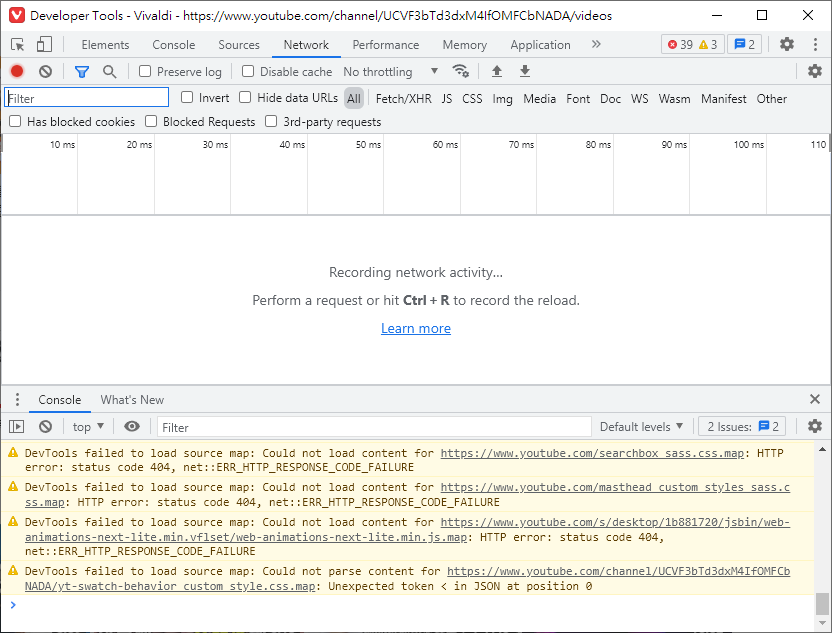
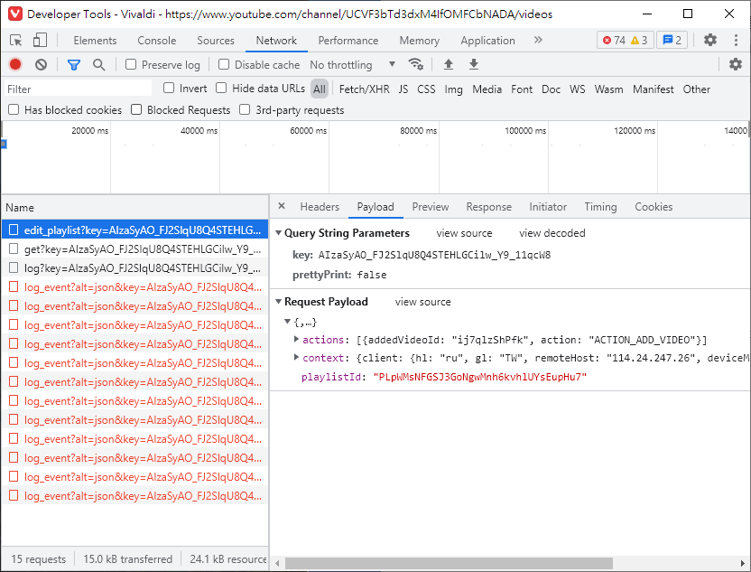
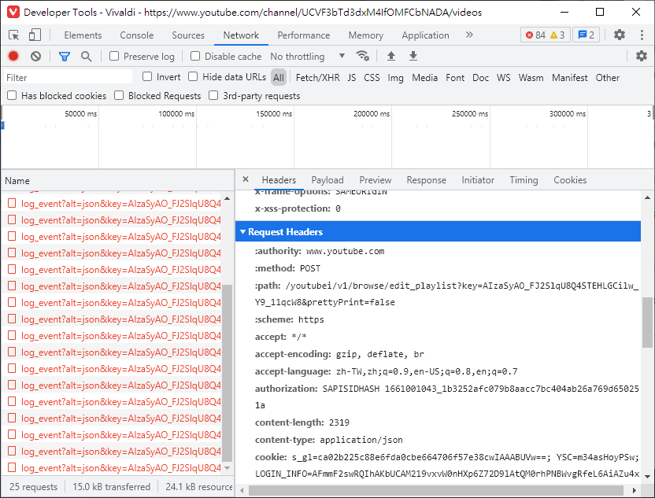
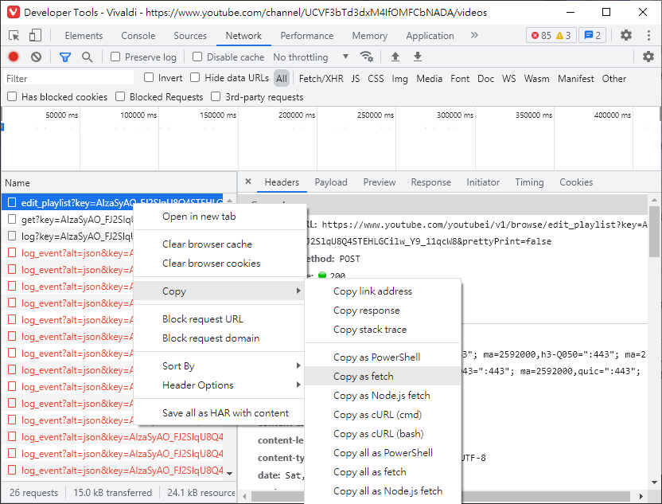
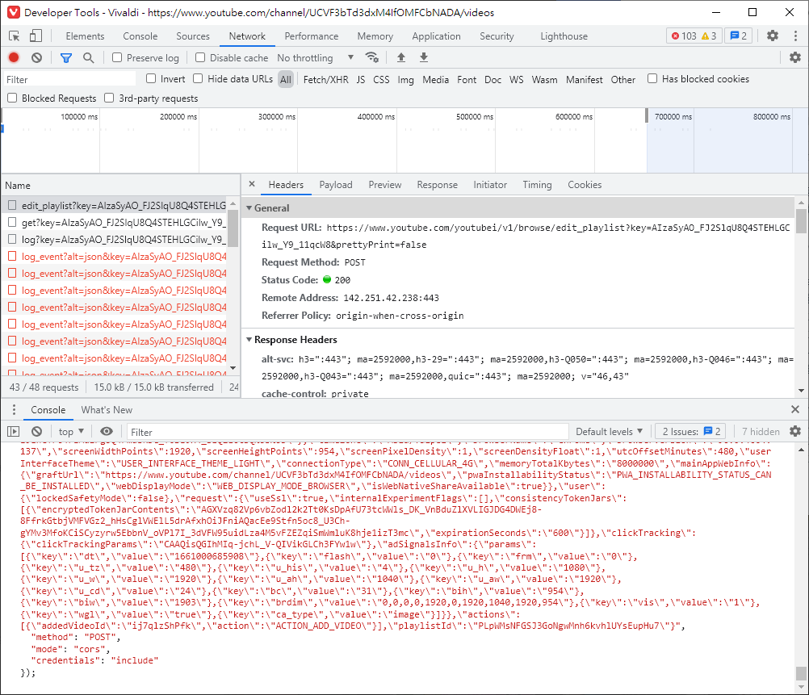
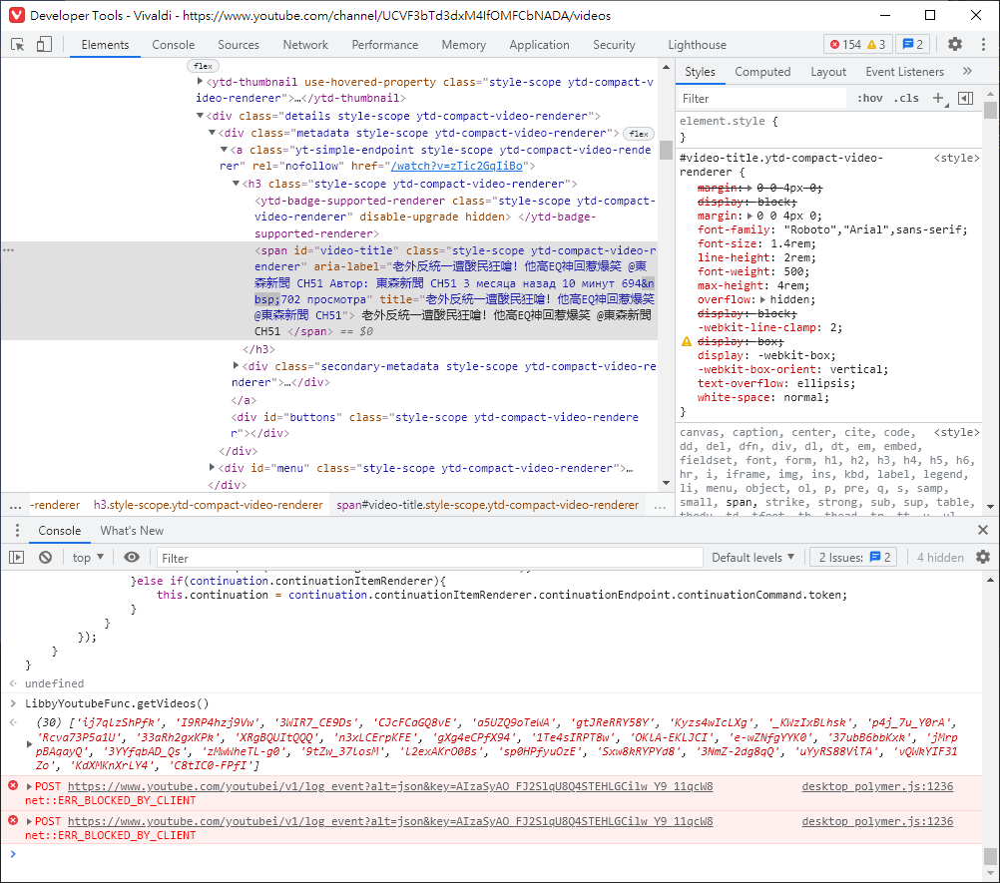

<!DOCTYPE HTML>
<html lang="zh-TW">

<head><meta name="generator" content="Hexo 3.8.0">
    <!--Setting-->
    <meta charset="UTF-8">
    <meta name="viewport" content="width=device-width, user-scalable=no, initial-scale=1.0, maximum-scale=1.0, minimum-scale=1.0">
    <meta http-equiv="X-UA-Compatible" content="IE=Edge,chrome=1">
    <meta http-equiv="Cache-Control" content="no-siteapp">
    <meta http-equiv="Cache-Control" content="no-transform">
    <meta name="renderer" content="webkit|ie-comp|ie-stand">
    <meta name="apple-mobile-web-app-capable" content="Linsly 的小日子">
    <meta name="apple-mobile-web-app-status-bar-style" content="black">
    <meta name="format-detection" content="telephone=no,email=no,adress=no">
    <meta name="browsermode" content="application">
    <meta name="screen-orientation" content="portrait">
    <meta name="theme-version" content="1.3.0">
    <meta name="root" content="/">
    <link rel="dns-prefetch" href="https://bvbnjghui.github.io">
    <!--SEO-->

<meta name="keywords" content="Javascript,爬蟲,Youtube,網頁開發">


<meta name="description" content="前言上次介紹了簡單應用 Javascript，抓出想要的資料進行處理的方法，但是其實瀏覽器的開發者工具還有很多方便的功能，這次要做的是稍微進階一點的爬蟲應用
操作方式
開啟瀏覽器的開發者工具 (...">


<meta name="robots" content="all">
<meta name="google" content="all">
<meta name="googlebot" content="all">
<meta name="verify" content="all">
    <!--Title-->

<title>
    
    爬蟲技術探索：批次將Youtube影片加入播放清單 |
    
    Linsly 的小日子
</title>

<link rel="alternate" href="/atom.xml" title="Linsly 的小日子" type="application/atom+xml">


<link rel="icon" href="/favicon.ico">

    

<link rel="stylesheet" href="/css/bootstrap.min.css?rev=3.3.7">
<link rel="stylesheet" href="/css/font-awesome.min.css?rev=4.7.0">
<link rel="stylesheet" href="/css/style.css?rev=@@hash">
    


<!-- Global site tag (gtag.js) - Google Analytics -->
<script async src="https://www.googletagmanager.com/gtag/js?id=G-C8BC7MR7PZ"></script>
<script>
  window.dataLayer = window.dataLayer || [];
  function gtag(){dataLayer.push(arguments);}
  gtag('js', new Date());

  gtag('config', 'G-C8BC7MR7PZ');
</script>


    

</head></html>
<!--[if lte IE 8]>
<style>
    html{ font-size: 1em }
</style>
<![endif]-->
<!--[if lte IE 9]>
<div style="ie">你使用的浏览器版本过低，为了你更好的阅读体验，请更新浏览器的版本或者使用其他现代浏览器，比如Chrome、Firefox、Safari等。</div>
<![endif]-->
<body>
    <header class="main-header" style="background-image:url(
    /./img/skyfire_arknights.jpg)">
    <div class="main-header-box">
        <a class="header-avatar" href="/" title="Linsly">
            
        </a>
        <div class="branding">
            <!--<h2 class="text-hide">Snippet主题,从未如此简单有趣</h2>-->
            
            <h2>
                今天午餐吃什麼
            </h2>
            
        </div>
    </div>
</header>
    <nav class="main-navigation">
    <div class="container">
        <div class="row">
            <div class="col-sm-12">
                <div class="navbar-header"><span class="nav-toggle-button collapsed pull-right" data-toggle="collapse" data-target="#main-menu" id="mnav">
                        <span class="sr-only"></span>
                        <i class="fa fa-bars"></i>
                    </span>
                    <a class="navbar-brand" href="https://bvbnjghui.github.io">
                        Linsly 的小日子</a>
                </div>
                <div class="collapse navbar-collapse" id="main-menu">
                    <ul class="menu">
                        
                        <li role="presentation" class="text-center">
                            <a href="/"><i class="fa "></i>
                                首頁</a>
                        </li>
                        
                        <li role="presentation" class="text-center">
                            <a href="/archives/"><i class="fa "></i>
                                时间轴</a>
                        </li>
                        
                    </ul>
                </div>
            </div>
        </div>
    </div>
</nav>
    <section class="content-wrap">
        <div class="container">
            <div class="row">
                <main class="col-md-8 main-content m-post">
                    <p id="process"></p>
<article class="post">
    <div class="post-head">
        <h1 id="爬蟲技術探索：批次將Youtube影片加入播放清單">
            
            爬蟲技術探索：批次將Youtube影片加入播放清單
            
        </h1>
        <div class="post-meta">
    
    <span class="categories-meta fa-wrap">
        <i class="fa fa-folder-open-o"></i>
        <a class="category-link" href="/categories/網頁技術/">網頁技術</a>
    </span>
    
    
    <span class="fa-wrap">
        <i class="fa fa-tags"></i>
        <span class="tags-meta">
            
            <a class="tag-link" href="/tags/Javascript/">Javascript</a> <a class="tag-link" href="/tags/Youtube/">Youtube</a> <a class="tag-link" href="/tags/爬蟲/">爬蟲</a> <a class="tag-link" href="/tags/網頁開發/">網頁開發</a>
            
        </span>
    </span>
    
    
    
    <span class="fa-wrap">
        <i class="fa fa-clock-o"></i>
        <span class="date-meta">
            2022/08/19</span>
    </span>
    
    
</div>
        
        
    </div>
    
    <div class="post-body post-content">
        <h2 id="前言"><a href="#前言" class="headerlink" title="前言"></a>前言</h2><p>上次介紹了簡單應用 Javascript，抓出想要的資料進行處理的方法，但是其實瀏覽器的開發者工具還有很多方便的功能，這次要做的是稍微進階一點的爬蟲應用</p>
<h2 id="操作方式"><a href="#操作方式" class="headerlink" title="操作方式"></a>操作方式</h2><ol>
<li>開啟瀏覽器的開發者工具 (F12 或 右鍵檢查)，切換到 Network (網路) 分頁</li>
<li>把影片加入播放清單，並觀察開發者工具的變化</li>
<li>找出剛剛加入播放清單後增加的幾筆紀錄，點擊查看詳細內容</li>
<li>在 <strong>Header</strong>、<strong>Payload</strong> 分頁可以看到傳送的各種參數，這些就是加入播放清單會送給伺服器的資料</li>
<li>測試一下，右鍵 -&gt; Copy -&gt; Copy as fetch，fetch 是瀏覽器用來與伺服器溝通的一種方式，有興趣進一步了解可以看看 <a href="https://developer.mozilla.org/en-US/docs/Web/API/Fetch_API/Using_Fetch" target="_blank" rel="noopener">MDN</a></li>
<li>把剛剛複製的內容，貼在下面控制台 (console) 並執行 (Enter)</li>
<li>回去檢查播放清單，應該會發現你剛剛選擇的影片加入了兩次，由此確定找到了需要的資料</li>
<li><p>回到開發者工具，通常 <strong>Header</strong> 是用來做一些驗證，而 <strong>Payload</strong> 是一些要溝通的資料，這裡發現有一筆資料 <figure class="highlight plain"><figcaption><span>"ACTION_ADD_VIDEO", addedVideoId: "..."&#125;```，下面有一段```playlistId: "..."```，從英文就可以看出，這是決定哪部影片，加入哪個播放清單的地方，因此在執行 fetch 的時候修改這些地方就可以了</span></figcaption><table><tr><td class="gutter"><pre><span class="line">1</span><br><span class="line">2</span><br><span class="line">3</span><br><span class="line">4</span><br><span class="line">5</span><br><span class="line">6</span><br><span class="line">7</span><br><span class="line">8</span><br><span class="line">9</span><br><span class="line">10</span><br><span class="line">11</span><br><span class="line">12</span><br><span class="line">13</span><br><span class="line">14</span><br><span class="line">15</span><br><span class="line">16</span><br><span class="line">17</span><br><span class="line">18</span><br><span class="line">19</span><br><span class="line">20</span><br><span class="line">21</span><br><span class="line">22</span><br><span class="line">23</span><br><span class="line">24</span><br><span class="line">25</span><br><span class="line">26</span><br><span class="line">27</span><br><span class="line">28</span><br><span class="line">29</span><br><span class="line">30</span><br><span class="line">31</span><br><span class="line">32</span><br><span class="line">33</span><br><span class="line">34</span><br><span class="line">35</span><br><span class="line">36</span><br><span class="line">37</span><br><span class="line">38</span><br><span class="line">39</span><br><span class="line">40</span><br><span class="line">41</span><br><span class="line">42</span><br><span class="line">43</span><br><span class="line">44</span><br><span class="line">45</span><br><span class="line">46</span><br><span class="line">47</span><br><span class="line">48</span><br><span class="line">49</span><br><span class="line">50</span><br><span class="line">51</span><br><span class="line">52</span><br><span class="line">53</span><br><span class="line">54</span><br><span class="line">55</span><br><span class="line">56</span><br><span class="line">57</span><br><span class="line">58</span><br><span class="line">59</span><br><span class="line">60</span><br><span class="line">61</span><br><span class="line">62</span><br><span class="line">63</span><br><span class="line">64</span><br><span class="line">65</span><br><span class="line">66</span><br><span class="line">67</span><br><span class="line">68</span><br><span class="line">69</span><br><span class="line">70</span><br><span class="line">71</span><br><span class="line">72</span><br><span class="line">73</span><br><span class="line">74</span><br><span class="line">75</span><br><span class="line">76</span><br><span class="line">77</span><br><span class="line">78</span><br><span class="line">79</span><br><span class="line">80</span><br><span class="line">81</span><br><span class="line">82</span><br><span class="line">83</span><br><span class="line">84</span><br><span class="line">85</span><br><span class="line">86</span><br><span class="line">87</span><br><span class="line">88</span><br><span class="line">89</span><br><span class="line">90</span><br><span class="line">91</span><br><span class="line">92</span><br><span class="line">93</span><br><span class="line">94</span><br><span class="line">95</span><br><span class="line">96</span><br><span class="line">97</span><br><span class="line">98</span><br><span class="line">99</span><br><span class="line">100</span><br><span class="line">101</span><br><span class="line">102</span><br><span class="line">103</span><br><span class="line">104</span><br><span class="line">105</span><br><span class="line">106</span><br><span class="line">107</span><br><span class="line">108</span><br><span class="line">109</span><br></pre></td><td class="code"><pre><span class="line">9. 為了方便使用，可以把它用 Javascript 包裝一下，這裡結合了上一篇提到的一些應用，簡單的範例如下：</span><br><span class="line">```var LibbyYoutubeFunc = &#123;</span><br><span class="line">    key: &apos;YOUR_KEY&apos;,</span><br><span class="line">    playlist: &apos;YOUR_PLAYLIST_ID&apos;,</span><br><span class="line">    authorization: &apos;YOUR_AUTHORIZATION&apos;,</span><br><span class="line">    continuation: &apos;&apos;,</span><br><span class="line">    videos: [],</span><br><span class="line">    // 取得影片ID getVideos(數量, 從第幾部影片開始)</span><br><span class="line">    getVideos: (cnt = 30, offset = 0) =&gt; Array.from(document.querySelectorAll(&apos;a#video-title&apos;)).map(v=&gt; v.href.replace(/.+(?:\?v=|shorts\/)([^&amp;]+)/, &apos;$1&apos;).substring(0,11)).slice(offset, offset+cnt),</span><br><span class="line">    // 批次將影片加入播放清單 addVideos(數量, 從第幾部影片開始)</span><br><span class="line">    addVideos(cnt = 30, offset = 0)&#123;</span><br><span class="line">        this.addVideoToList(this.getVideos(cnt, offset));</span><br><span class="line">    &#125;,</span><br><span class="line">    // 取得畫面上的影片數量 countVideos()</span><br><span class="line">    countVideos: () =&gt; Array.from(document.querySelectorAll(&apos;a#video-title&apos;)).length,</span><br><span class="line">    // 取得畫面上的影片連結 getLinks(數量, 從第幾部影片開始)</span><br><span class="line">    getLinks: (cnt = 30, offset = 0) =&gt; Array.from(document.querySelectorAll(&apos;a#video-title&apos;)).slice(offset, offset+cnt).map(v=&gt;v.href),</span><br><span class="line">    // 將影片加入播放清單 addVideoToList(影片ID)</span><br><span class="line">    addVideoToList(videos)&#123;</span><br><span class="line">        if(!videos) return;</span><br><span class="line">        let actions = JSON.stringify(videos.map(v=&gt;&#123; return &#123;&apos;action&apos;:&apos;ACTION_ADD_VIDEO&apos;,&apos;addedVideoId&apos;:v&#125; &#125;));</span><br><span class="line">        fetch(`https://www.youtube.com/youtubei/v1/browse/edit_playlist?key=$&#123;this.key&#125;&amp;prettyPrint=false`, &#123;</span><br><span class="line">            &quot;headers&quot;: &#123;</span><br><span class="line">              &quot;accept&quot;: &quot;*/*&quot;,</span><br><span class="line">              &quot;accept-language&quot;: &quot;zh-TW,zh;q=0.9,en-US;q=0.8,en;q=0.7&quot;,</span><br><span class="line">              &quot;authorization&quot;: this.authorization,</span><br><span class="line">              &quot;content-type&quot;: &quot;application/json&quot;,</span><br><span class="line">              &quot;sec-ch-ua&quot;: &quot;\&quot;Chromium\&quot;;v=\&quot;96\&quot;, \&quot; Not A;Brand\&quot;;v=\&quot;99\&quot;&quot;,</span><br><span class="line">              &quot;sec-ch-ua-arch&quot;: &quot;\&quot;x86\&quot;&quot;,</span><br><span class="line">              &quot;sec-ch-ua-bitness&quot;: &quot;\&quot;64\&quot;&quot;,</span><br><span class="line">              &quot;sec-ch-ua-full-version&quot;: &quot;\&quot;96.0.4664.137\&quot;&quot;,</span><br><span class="line">              &quot;sec-ch-ua-mobile&quot;: &quot;?0&quot;,</span><br><span class="line">              &quot;sec-ch-ua-model&quot;: &quot;&quot;,</span><br><span class="line">              &quot;sec-ch-ua-platform&quot;: &quot;\&quot;Windows\&quot;&quot;,</span><br><span class="line">              &quot;sec-ch-ua-platform-version&quot;: &quot;\&quot;10.0.0\&quot;&quot;,</span><br><span class="line">              &quot;sec-fetch-dest&quot;: &quot;empty&quot;,</span><br><span class="line">              &quot;sec-fetch-mode&quot;: &quot;same-origin&quot;,</span><br><span class="line">              &quot;sec-fetch-site&quot;: &quot;same-origin&quot;,</span><br><span class="line">              &quot;x-goog-authuser&quot;: &quot;0&quot;,</span><br><span class="line">              &quot;x-goog-pageid&quot;: &quot;112278217211704261332&quot;,</span><br><span class="line">              &quot;x-goog-visitor-id&quot;: &quot;Cgt5T09vSWw1ZEtzVSiNhaWXBg%3D%3D&quot;,</span><br><span class="line">              &quot;x-origin&quot;: &quot;https://www.youtube.com&quot;,</span><br><span class="line">              &quot;x-youtube-bootstrap-logged-in&quot;: &quot;true&quot;,</span><br><span class="line">              &quot;x-youtube-client-name&quot;: &quot;1&quot;,</span><br><span class="line">              &quot;x-youtube-client-version&quot;: &quot;2.20220801.00.00&quot;</span><br><span class="line">            &#125;,</span><br><span class="line">            &quot;referrer&quot;: location.href,</span><br><span class="line">            &quot;referrerPolicy&quot;: &quot;strict-origin-when-cross-origin&quot;,</span><br><span class="line">            &quot;body&quot;: `&#123;\&quot;context\&quot;:&#123;\&quot;client\&quot;:&#123;\&quot;hl\&quot;:\&quot;ru\&quot;,\&quot;gl\&quot;:\&quot;TW\&quot;,\&quot;remoteHost\&quot;:\&quot;114.24.219.231\&quot;,\&quot;deviceMake\&quot;:\&quot;\&quot;,\&quot;deviceModel\&quot;:\&quot;\&quot;,\&quot;visitorData\&quot;:\&quot;Cgt5T09vSWw1ZEtzVSiNhaWXBg%3D%3D\&quot;,\&quot;userAgent\&quot;:\&quot;Mozilla/5.0 (Windows NT 10.0; Win64; x64) AppleWebKit/537.36 (KHTML, like Gecko) Chrome/96.0.4664.137 Safari/537.36,gzip(gfe)\&quot;,\&quot;clientName\&quot;:\&quot;WEB\&quot;,\&quot;clientVersion\&quot;:\&quot;2.20220801.00.00\&quot;,\&quot;osName\&quot;:\&quot;Windows\&quot;,\&quot;osVersion\&quot;:\&quot;10.0\&quot;,\&quot;originalUrl\&quot;:\&quot;https://www.youtube.com/channel/UCxWAL-c1psONO_DfG-cq2iA\&quot;,\&quot;platform\&quot;:\&quot;DESKTOP\&quot;,\&quot;clientFormFactor\&quot;:\&quot;UNKNOWN_FORM_FACTOR\&quot;,\&quot;configInfo\&quot;:&#123;\&quot;appInstallData\&quot;:\&quot;CI2FpZcGEMvs_RIQt8utBRDLoq4FEKbz_RIQ1IOuBRDm-P0SEMT2_RIQuIuuBRDYmq4FEJa1rgUQ0K2uBRD9-v0SENi-rQUQkfj8Eg%3D%3D\&quot;&#125;,\&quot;timeZone\&quot;:\&quot;Asia/Taipei\&quot;,\&quot;browserName\&quot;:\&quot;Chrome\&quot;,\&quot;browserVersion\&quot;:\&quot;96.0.4664.137\&quot;,\&quot;screenWidthPoints\&quot;:1305,\&quot;screenHeightPoints\&quot;:954,\&quot;screenPixelDensity\&quot;:1,\&quot;screenDensityFloat\&quot;:1,\&quot;utcOffsetMinutes\&quot;:480,\&quot;userInterfaceTheme\&quot;:\&quot;USER_INTERFACE_THEME_LIGHT\&quot;,\&quot;connectionType\&quot;:\&quot;CONN_CELLULAR_4G\&quot;,\&quot;memoryTotalKbytes\&quot;:\&quot;8000000\&quot;,\&quot;mainAppWebInfo\&quot;:&#123;\&quot;graftUrl\&quot;:\&quot;https://www.youtube.com/channel/UCxWAL-c1psONO_DfG-cq2iA/videos\&quot;,\&quot;pwaInstallabilityStatus\&quot;:\&quot;PWA_INSTALLABILITY_STATUS_CAN_BE_INSTALLED\&quot;,\&quot;webDisplayMode\&quot;:\&quot;WEB_DISPLAY_MODE_BROWSER\&quot;,\&quot;isWebNativeShareAvailable\&quot;:true&#125;&#125;,\&quot;user\&quot;:&#123;\&quot;lockedSafetyMode\&quot;:false&#125;,\&quot;request\&quot;:&#123;\&quot;useSsl\&quot;:true,\&quot;internalExperimentFlags\&quot;:[],\&quot;consistencyTokenJars\&quot;:[]&#125;,\&quot;clickTracking\&quot;:&#123;\&quot;clickTrackingParams\&quot;:\&quot;CAAQisQGIhMIkYjY6ryo-QIViB5gCh1NawNv\&quot;&#125;,\&quot;adSignalsInfo\&quot;:&#123;\&quot;params\&quot;:[&#123;\&quot;key\&quot;:\&quot;dt\&quot;,\&quot;value\&quot;:\&quot;1659454091942\&quot;&#125;,&#123;\&quot;key\&quot;:\&quot;flash\&quot;,\&quot;value\&quot;:\&quot;0\&quot;&#125;,&#123;\&quot;key\&quot;:\&quot;frm\&quot;,\&quot;value\&quot;:\&quot;0\&quot;&#125;,&#123;\&quot;key\&quot;:\&quot;u_tz\&quot;,\&quot;value\&quot;:\&quot;480\&quot;&#125;,&#123;\&quot;key\&quot;:\&quot;u_his\&quot;,\&quot;value\&quot;:\&quot;2\&quot;&#125;,&#123;\&quot;key\&quot;:\&quot;u_h\&quot;,\&quot;value\&quot;:\&quot;1080\&quot;&#125;,&#123;\&quot;key\&quot;:\&quot;u_w\&quot;,\&quot;value\&quot;:\&quot;1920\&quot;&#125;,&#123;\&quot;key\&quot;:\&quot;u_ah\&quot;,\&quot;value\&quot;:\&quot;1040\&quot;&#125;,&#123;\&quot;key\&quot;:\&quot;u_aw\&quot;,\&quot;value\&quot;:\&quot;1920\&quot;&#125;,&#123;\&quot;key\&quot;:\&quot;u_cd\&quot;,\&quot;value\&quot;:\&quot;24\&quot;&#125;,&#123;\&quot;key\&quot;:\&quot;bc\&quot;,\&quot;value\&quot;:\&quot;31\&quot;&#125;,&#123;\&quot;key\&quot;:\&quot;bih\&quot;,\&quot;value\&quot;:\&quot;954\&quot;&#125;,&#123;\&quot;key\&quot;:\&quot;biw\&quot;,\&quot;value\&quot;:\&quot;1288\&quot;&#125;,&#123;\&quot;key\&quot;:\&quot;brdim\&quot;,\&quot;value\&quot;:\&quot;0,0,0,0,1920,0,1920,1040,1305,954\&quot;&#125;,&#123;\&quot;key\&quot;:\&quot;vis\&quot;,\&quot;value\&quot;:\&quot;1\&quot;&#125;,&#123;\&quot;key\&quot;:\&quot;wgl\&quot;,\&quot;value\&quot;:\&quot;true\&quot;&#125;,&#123;\&quot;key\&quot;:\&quot;ca_type\&quot;,\&quot;value\&quot;:\&quot;image\&quot;&#125;]&#125;&#125;,\&quot;actions\&quot;:$&#123;actions&#125;,&quot;playlistId&quot;:&quot;$&#123;this.playlist&#125;&quot;&#125;`,</span><br><span class="line">            &quot;method&quot;: &quot;POST&quot;,</span><br><span class="line">            &quot;mode&quot;: &quot;cors&quot;,</span><br><span class="line">            &quot;credentials&quot;: &quot;include&quot;</span><br><span class="line">        &#125;).then(res=&gt;res.json()).then(data=&gt;&#123;</span><br><span class="line">            if(data.error) console.log(data.error, videos);</span><br><span class="line">        &#125;);</span><br><span class="line">    &#125;,</span><br><span class="line">    // 模擬捲動行為，取得後面的影片 (未充分測試)</span><br><span class="line">    getNextVideos()&#123;</span><br><span class="line">        if(!this.continuation) return;</span><br><span class="line">        fetch(`https://www.youtube.com/youtubei/v1/browse?key=$&#123;this.key&#125;&amp;prettyPrint=false`, &#123;</span><br><span class="line">        &quot;headers&quot;: &#123;</span><br><span class="line">            &quot;accept&quot;: &quot;*/*&quot;,</span><br><span class="line">            &quot;accept-language&quot;: &quot;zh-TW,zh;q=0.9,en-US;q=0.8,en;q=0.7&quot;,</span><br><span class="line">            &quot;authorization&quot;: this.authorization,</span><br><span class="line">            &quot;content-type&quot;: &quot;application/json&quot;,</span><br><span class="line">            &quot;sec-ch-ua&quot;: &quot;\&quot;Chromium\&quot;;v=\&quot;96\&quot;, \&quot; Not A;Brand\&quot;;v=\&quot;99\&quot;&quot;,</span><br><span class="line">            &quot;sec-ch-ua-arch&quot;: &quot;\&quot;x86\&quot;&quot;,</span><br><span class="line">            &quot;sec-ch-ua-bitness&quot;: &quot;\&quot;64\&quot;&quot;,</span><br><span class="line">            &quot;sec-ch-ua-full-version&quot;: &quot;\&quot;96.0.4664.137\&quot;&quot;,</span><br><span class="line">            &quot;sec-ch-ua-mobile&quot;: &quot;?0&quot;,</span><br><span class="line">            &quot;sec-ch-ua-model&quot;: &quot;&quot;,</span><br><span class="line">            &quot;sec-ch-ua-platform&quot;: &quot;\&quot;Windows\&quot;&quot;,</span><br><span class="line">            &quot;sec-ch-ua-platform-version&quot;: &quot;\&quot;10.0.0\&quot;&quot;,</span><br><span class="line">            &quot;sec-fetch-dest&quot;: &quot;empty&quot;,</span><br><span class="line">            &quot;sec-fetch-mode&quot;: &quot;same-origin&quot;,</span><br><span class="line">            &quot;sec-fetch-site&quot;: &quot;same-origin&quot;,</span><br><span class="line">            &quot;x-goog-authuser&quot;: &quot;0&quot;,</span><br><span class="line">            &quot;x-goog-pageid&quot;: &quot;112278217211704261332&quot;,</span><br><span class="line">            &quot;x-goog-visitor-id&quot;: &quot;Cgt5T09vSWw1ZEtzVSimuaWXBg%3D%3D&quot;,</span><br><span class="line">            &quot;x-origin&quot;: &quot;https://www.youtube.com&quot;,</span><br><span class="line">            &quot;x-youtube-bootstrap-logged-in&quot;: &quot;true&quot;,</span><br><span class="line">            &quot;x-youtube-client-name&quot;: &quot;1&quot;,</span><br><span class="line">            &quot;x-youtube-client-version&quot;: &quot;2.20220801.00.00&quot;</span><br><span class="line">        &#125;,</span><br><span class="line">        &quot;referrer&quot;: &quot;https://www.youtube.com/channel/UC_soGpcb7SORsk5yzHLMdTQ/videos&quot;,</span><br><span class="line">        &quot;referrerPolicy&quot;: &quot;origin-when-cross-origin&quot;,</span><br><span class="line">        &quot;body&quot;: `&#123;\&quot;context\&quot;:&#123;\&quot;client\&quot;:&#123;\&quot;hl\&quot;:\&quot;ru\&quot;,\&quot;gl\&quot;:\&quot;TW\&quot;,\&quot;remoteHost\&quot;:\&quot;114.24.219.231\&quot;,\&quot;deviceMake\&quot;:\&quot;\&quot;,\&quot;deviceModel\&quot;:\&quot;\&quot;,\&quot;visitorData\&quot;:\&quot;Cgt5T09vSWw1ZEtzVSimuaWXBg%3D%3D\&quot;,\&quot;userAgent\&quot;:\&quot;Mozilla/5.0 (Windows NT 10.0; Win64; x64) AppleWebKit/537.36 (KHTML, like Gecko) Chrome/96.0.4664.137 Safari/537.36,gzip(gfe)\&quot;,\&quot;clientName\&quot;:\&quot;WEB\&quot;,\&quot;clientVersion\&quot;:\&quot;2.20220801.00.00\&quot;,\&quot;osName\&quot;:\&quot;Windows\&quot;,\&quot;osVersion\&quot;:\&quot;10.0\&quot;,\&quot;originalUrl\&quot;:\&quot;https://www.youtube.com/watch?v=1rIlWGVD8u8\&quot;,\&quot;platform\&quot;:\&quot;DESKTOP\&quot;,\&quot;clientFormFactor\&quot;:\&quot;UNKNOWN_FORM_FACTOR\&quot;,\&quot;configInfo\&quot;:&#123;\&quot;appInstallData\&quot;:\&quot;CKa5pZcGENiargUQ0K2uBRC3y60FELiLrgUQ5vj9EhDUg64FEKbz_RIQy6KuBRDL7P0SEMT2_RIQlrWuBRD9-v0SENi-rQUQkfj8Eg%3D%3D\&quot;&#125;,\&quot;timeZone\&quot;:\&quot;Asia/Taipei\&quot;,\&quot;browserName\&quot;:\&quot;Chrome\&quot;,\&quot;browserVersion\&quot;:\&quot;96.0.4664.137\&quot;,\&quot;screenWidthPoints\&quot;:1920,\&quot;screenHeightPoints\&quot;:954,\&quot;screenPixelDensity\&quot;:1,\&quot;screenDensityFloat\&quot;:1,\&quot;utcOffsetMinutes\&quot;:480,\&quot;userInterfaceTheme\&quot;:\&quot;USER_INTERFACE_THEME_LIGHT\&quot;,\&quot;connectionType\&quot;:\&quot;CONN_CELLULAR_4G\&quot;,\&quot;memoryTotalKbytes\&quot;:\&quot;8000000\&quot;,\&quot;mainAppWebInfo\&quot;:&#123;\&quot;graftUrl\&quot;:\&quot;https://www.youtube.com/channel/UC_soGpcb7SORsk5yzHLMdTQ/videos\&quot;,\&quot;pwaInstallabilityStatus\&quot;:\&quot;PWA_INSTALLABILITY_STATUS_CAN_BE_INSTALLED\&quot;,\&quot;webDisplayMode\&quot;:\&quot;WEB_DISPLAY_MODE_BROWSER\&quot;,\&quot;isWebNativeShareAvailable\&quot;:true&#125;&#125;,\&quot;user\&quot;:&#123;\&quot;lockedSafetyMode\&quot;:false&#125;,\&quot;request\&quot;:&#123;\&quot;useSsl\&quot;:true,\&quot;internalExperimentFlags\&quot;:[],\&quot;consistencyTokenJars\&quot;:[]&#125;,\&quot;clickTracking\&quot;:&#123;\&quot;clickTrackingParams\&quot;:\&quot;CC8Q6IsCGAAiEwjdnaeU1aj5AhUDxUwCHZeIB8s=\&quot;&#125;,\&quot;adSignalsInfo\&quot;:&#123;\&quot;params\&quot;:[&#123;\&quot;key\&quot;:\&quot;dt\&quot;,\&quot;value\&quot;:\&quot;1659460773110\&quot;&#125;,&#123;\&quot;key\&quot;:\&quot;flash\&quot;,\&quot;value\&quot;:\&quot;0\&quot;&#125;,&#123;\&quot;key\&quot;:\&quot;frm\&quot;,\&quot;value\&quot;:\&quot;0\&quot;&#125;,&#123;\&quot;key\&quot;:\&quot;u_tz\&quot;,\&quot;value\&quot;:\&quot;480\&quot;&#125;,&#123;\&quot;key\&quot;:\&quot;u_his\&quot;,\&quot;value\&quot;:\&quot;3\&quot;&#125;,&#123;\&quot;key\&quot;:\&quot;u_h\&quot;,\&quot;value\&quot;:\&quot;1080\&quot;&#125;,&#123;\&quot;key\&quot;:\&quot;u_w\&quot;,\&quot;value\&quot;:\&quot;1920\&quot;&#125;,&#123;\&quot;key\&quot;:\&quot;u_ah\&quot;,\&quot;value\&quot;:\&quot;1040\&quot;&#125;,&#123;\&quot;key\&quot;:\&quot;u_aw\&quot;,\&quot;value\&quot;:\&quot;1920\&quot;&#125;,&#123;\&quot;key\&quot;:\&quot;u_cd\&quot;,\&quot;value\&quot;:\&quot;24\&quot;&#125;,&#123;\&quot;key\&quot;:\&quot;bc\&quot;,\&quot;value\&quot;:\&quot;31\&quot;&#125;,&#123;\&quot;key\&quot;:\&quot;bih\&quot;,\&quot;value\&quot;:\&quot;954\&quot;&#125;,&#123;\&quot;key\&quot;:\&quot;biw\&quot;,\&quot;value\&quot;:\&quot;1903\&quot;&#125;,&#123;\&quot;key\&quot;:\&quot;brdim\&quot;,\&quot;value\&quot;:\&quot;0,0,0,0,1920,0,1920,1040,1920,954\&quot;&#125;,&#123;\&quot;key\&quot;:\&quot;vis\&quot;,\&quot;value\&quot;:\&quot;1\&quot;&#125;,&#123;\&quot;key\&quot;:\&quot;wgl\&quot;,\&quot;value\&quot;:\&quot;true\&quot;&#125;,&#123;\&quot;key\&quot;:\&quot;ca_type\&quot;,\&quot;value\&quot;:\&quot;image\&quot;&#125;]&#125;&#125;,\&quot;continuation\&quot;:&quot;$&#123;this.continuation&#125;&quot;&#125;`,</span><br><span class="line">        &quot;method&quot;: &quot;POST&quot;,</span><br><span class="line">        &quot;mode&quot;: &quot;cors&quot;,</span><br><span class="line">        &quot;credentials&quot;: &quot;include&quot;</span><br><span class="line">        &#125;).then(data=&gt;data.json()).then(res =&gt; &#123;</span><br><span class="line">            this.videos = [];</span><br><span class="line">            this.continuation = &apos;&apos;;</span><br><span class="line">            </span><br><span class="line">            for(let continuation of res.onResponseReceivedActions[0].appendContinuationItemsAction.continuationItems)&#123;</span><br><span class="line">                if(continuation.gridVideoRenderer)&#123;</span><br><span class="line">                    this.videos.push(continuation.gridVideoRenderer.videoId);</span><br><span class="line">                &#125;else if(continuation.continuationItemRenderer)&#123;</span><br><span class="line">                    this.continuation = continuation.continuationItemRenderer.continuationEndpoint.continuationCommand.token;</span><br><span class="line">                &#125;</span><br><span class="line">            &#125;</span><br><span class="line">        &#125;);</span><br><span class="line">    &#125;,</span><br><span class="line">    // 把模擬捲動獲得的影片加入播放清單</span><br><span class="line">    addStoredVideos()&#123;</span><br><span class="line">        this.addVideoToList(this.videos);</span><br><span class="line">        this.videos = [];</span><br><span class="line">    &#125;,</span><br><span class="line">&#125;</span><br></pre></td></tr></table></figure></p>
</li>
<li><p>上面那段程式，把 key、playlist、authorization 改成自己從 fetch 裡面得到的資料就可以使用了。可以在執行前修改，或者執行後輸入 <code>LibbyYoutubeFunc.key</code> 修改 key 等資料，之後就可以用 <code>LibbyYoutubeFunc.getVideos()</code>、<code>LibbyYoutubeFunc.addVideos(10, 20)</code>執行包裝好的程式，不過好像不能一次加入太多影片，所以我預設一次 30 部影片</p>
<h2 id="結語"><a href="#結語" class="headerlink" title="結語"></a>結語</h2><p>這篇算是進階的 JS 和 開發者工具運用，雖然沒有複雜的操作，但是如果沒有一點程式碼基礎，可能還是不好理解。如果跳過包裝程式碼那段，加入播放清單其實就是：<br><strong>開發者工具 -&gt; 複製 fetch -&gt; 修改影片 ID -&gt; 執行</strong></p>
</li>
</ol>

    </div>
    
    <div class="post-footer">
        <div>
            
            轉載聲明：
            商業轉載請聯繫作者獲得授權,非商業轉載請註明出處。
            
            
        </div>
        <div>
            
        </div>
    </div>
</article>
<div class="article-nav prev-next-wrap clearfix">
    
    
    <a href="/Javascript應用-快速取得全部影片連結/" class="next-post btn btn-default" title="Javascript應用 - 快速取得全部影片連結">
        <span class="hidden-lg">下一篇</span>
        <span class="hidden-xs">
            Javascript應用 - 快速取得全部影片連結</span><i class="fa fa-angle-right fa-fw"></i>
    </a>
    
</div>

<div id="comments">
    
<p>评论系统未开启，无法评论！</p>

</div>

                </main>
                    
<aside class="col-md-4 sidebar">
    
    
    <div class="widget">
        <h3 class="title">
            文章目錄
        </h3>
        
        <ol class="toc"><li class="toc-item toc-level-2"><a class="toc-link" href="#前言"><span class="toc-text">前言</span></a></li><li class="toc-item toc-level-2"><a class="toc-link" href="#操作方式"><span class="toc-text">操作方式</span></a></li><li class="toc-item toc-level-2"><a class="toc-link" href="#結語"><span class="toc-text">結語</span></a></li></ol>
        
    </div>

    
    
<div class="widget">
    <h3 class="title">
        搜尋
    </h3>
    <div id="search-form">
        <div id="result-mask" class="hide"></div>
        <div class="search-area">
            
            <input id="search-key" type="search" autocomplete="off" placeholder="搜點什麽呢?">
            <button type="button" class="search-form-submit" id="search-local">
                站內搜索</button>
            
            
        </div>
        <div id="result-wrap" class="hide">
            <div id="search-result"></div>
        </div>
        <div class="hide">
            <template id="search-tpl">
                <div class="item">
                    <a href="/{path}" title="{title}">
                        <div class="title">{title}</div>
                        <div class="content">{content}</div>
                    </a>
                </div>
            </template>
        </div>
    </div>
</div>

    
    
<div class="widget">
    <h3 class="title">
        社交
    </h3>
    <div class="content social">
        
        <a href="mailto:hapzxc01@gmail.com" rel="external nofollow" title="電子郵件" target="_blank">
            <i class="envelope-o fa fa-envelope-o"></i>
        </a>
        
    </div>
</div>

    
    
<div class="widget">
    <h3 class="title">
        分類
    </h3>
    <ul class="category-list"><li class="category-list-item"><a class="category-list-link" href="/categories/學習/"><i class="fa" aria-hidden="true">學習</i></a><span class="category-list-count">3</span></li><li class="category-list-item"><a class="category-list-link" href="/categories/發燒話題/"><i class="fa" aria-hidden="true">發燒話題</i></a><span class="category-list-count">1</span></li><li class="category-list-item"><a class="category-list-link" href="/categories/系統設定/"><i class="fa" aria-hidden="true">系統設定</i></a><span class="category-list-count">1</span></li><li class="category-list-item"><a class="category-list-link current" href="/categories/網頁技術/"><i class="fa" aria-hidden="true">網頁技術</i></a><span class="category-list-count">3</span></li></ul>
</div>

    
    
<div class="widget">
    <h3 class="title">
        彙整
    </h3>
    <ul class="archive-list"><li class="archive-list-item"><a class="archive-list-link" href="/archives/2022/08/"><i class="fa" aria-hidden="true">2022年08月</i></a><span class="archive-list-count">3</span></li><li class="archive-list-item"><a class="archive-list-link" href="/archives/2022/05/"><i class="fa" aria-hidden="true">2022年05月</i></a><span class="archive-list-count">2</span></li><li class="archive-list-item"><a class="archive-list-link" href="/archives/2020/01/"><i class="fa" aria-hidden="true">2020年01月</i></a><span class="archive-list-count">3</span></li></ul>
</div>

    
    
<div class="widget">
    <h3 class="title">
        標籤雲
    </h3>
    <div class="content tag-cloud">
        
        <a href="/tags/CSS/" style="font-size: 10px;">CSS</a> <a href="/tags/Javascript/" style="font-size: 15px;">Javascript</a> <a href="/tags/VPN/" style="font-size: 10px;">VPN</a> <a href="/tags/Youtube/" style="font-size: 15px;">Youtube</a> <a href="/tags/sticky/" style="font-size: 10px;">sticky</a> <a href="/tags/windows/" style="font-size: 10px;">windows</a> <a href="/tags/俄語/" style="font-size: 20px;">俄語</a> <a href="/tags/單字/" style="font-size: 10px;">單字</a> <a href="/tags/文法/" style="font-size: 15px;">文法</a> <a href="/tags/爬蟲/" style="font-size: 15px;">爬蟲</a> <a href="/tags/網頁開發/" style="font-size: 15px;">網頁開發</a> <a href="/tags/觀看權限/" style="font-size: 10px;">觀看權限</a>
        
    </div>
</div>

    
</aside>

            </div>
        </div>
    </section>
    <footer class="main-footer">
    <div class="container">
        <div class="row">
        </div>
    </div>
</footer>
<a id="back-to-top" class="icon-btn hide">
    <i class="fa fa-chevron-up"></i>
</a>
    <div class="copyright">
    <div class="container">
        <div class="row">
            <div class="col-sm-12">
                <div class="busuanzi">
    
</div>
            </div>
            <div class="col-sm-12">
                <span>Copyright &copy;
                    2020
                    
                </span>
            </div>
        </div>
    </div>
</div>


<script src="/js/app.js?rev=@@hash"></script>
</body>
</html>